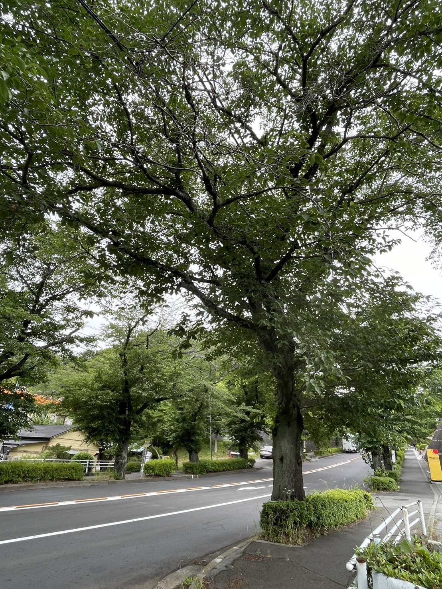
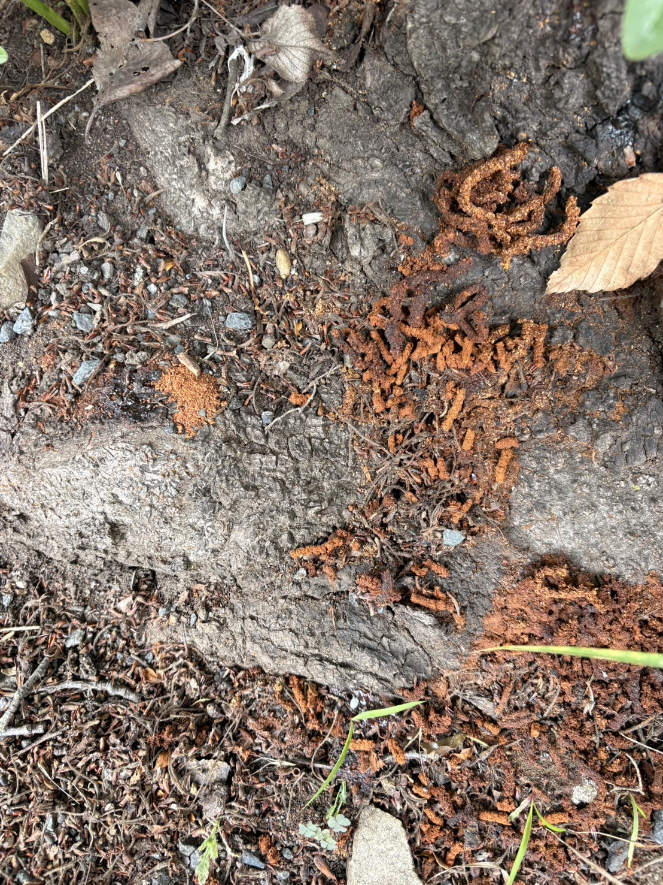
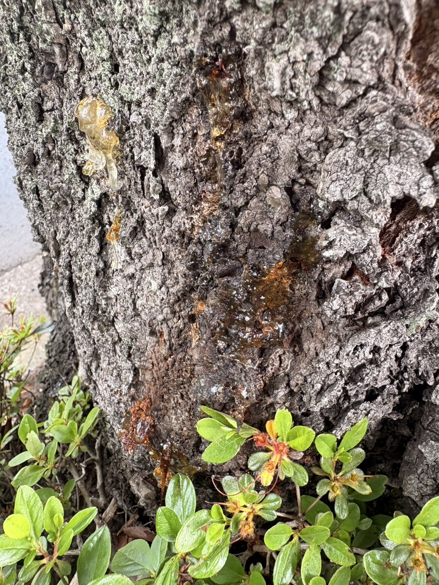

サクラの異変を
見つけたら教えてください
写真を撮って送るだけ。むずかしい判断は不要です。
あとは私たち樹木医が確認します。
1木の全体を撮る必須
どの木か分かるように、少し離れて全体を撮ってください。
木の幹から枝先まで入るように。周りの様子も写ると場所が分かりやすいです。

✓ 全景の写真を登録しました
2被害部を近くで撮る必須
幹の根元の「木くず」や、幹の「穴」など、気になる部分を近づいて撮ってください。
根元のかりんとう状の木くず（フラス）や、幹からにじむヤニ（樹液）が手がかりです。似たものがあれば大きく写してください。

フラス（木くず）

ヤニ（樹液）
✓ 被害部の写真を登録しました
3場所を教える必須
次のいずれかの方法で場所を指定してください。あとから地図のピンを動かして微調整できます。
または
または
この場所はどんな場所ですか？
一般公開マップでの場所の見せ方
個人宅・学校・企業などを選ぶと、一般公開マップでは自動的に大まかな表示になります（対策室には正確な場所が伝わります）。
4気づいたこと任意
分かる範囲でかまいません。「わからない」でも大丈夫です。
根元や幹に、お手本のような木くず（フラス）がありましたか？
幹から、お手本のようなヤニ（樹液）がにじんでいましたか？
幹に直径1cmくらいの丸い穴がありましたか？
黒くて首が赤い虫を見ましたか？（成虫は6〜8月頃）
木の種類は分かりますか？
5補足（自由）任意
連絡先は対策室だけが確認します。外部には公開されません。
写真は確認のためだけに使われます。
ご協力ありがとうございます。